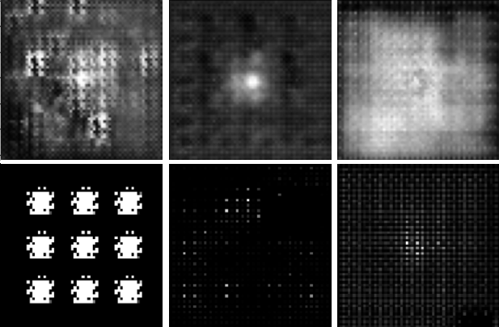

WORK IN PROGRESS:
Generating images of galaxies using DCGAN and cGAN
 A project utilizing cGAN to generate new galaxy images.
The use of cGAN (conditional Generative Adversarial Network) allows for selecting a class based on Galaxy morphological classification and generating an image of a non-existent galaxy.
The dataset used, astroNN Galaxy10, consists of a total of 17,000 images with dimensions of 256x256 pixels, divided into 10 classes.
The project has proven to be much more challenging than anticipated due to hardware limitations.
My PC has relatively limited RAM, and loading the training images into RAM is not feasible.
Consequently, I had to create a custom generator to load images in batches directly from the hard drive.
Another limitation is the training time of the network. Due to the high number of parameters and the use of my older GPU, the training process is quite slow.
-
Work in progress:
- fine-tuning hyperparameters
- training the model on a larger number of images and epochs
- increasing the initial resolution (currently 64x64)
- improving the network architecture